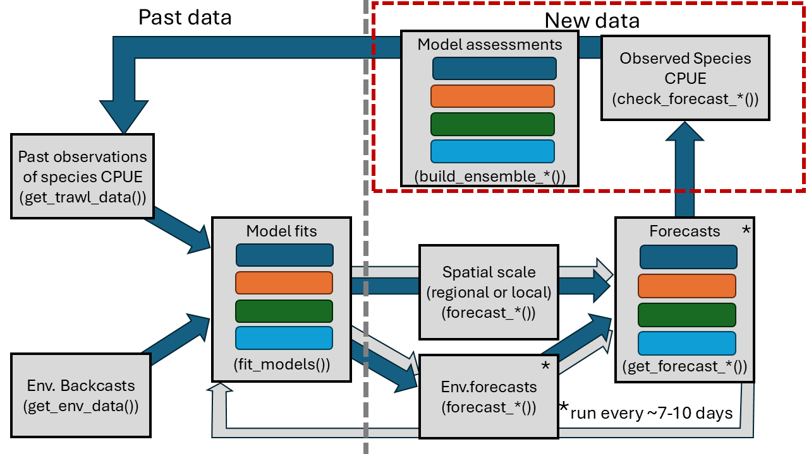
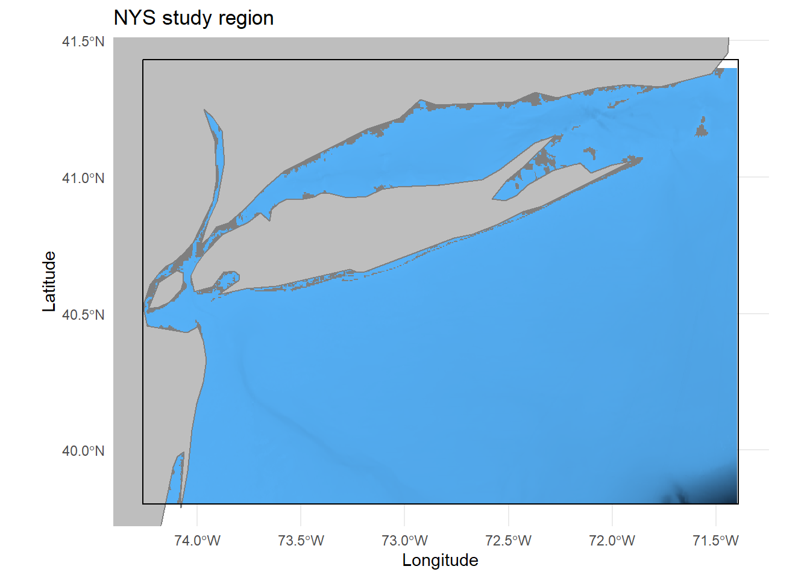
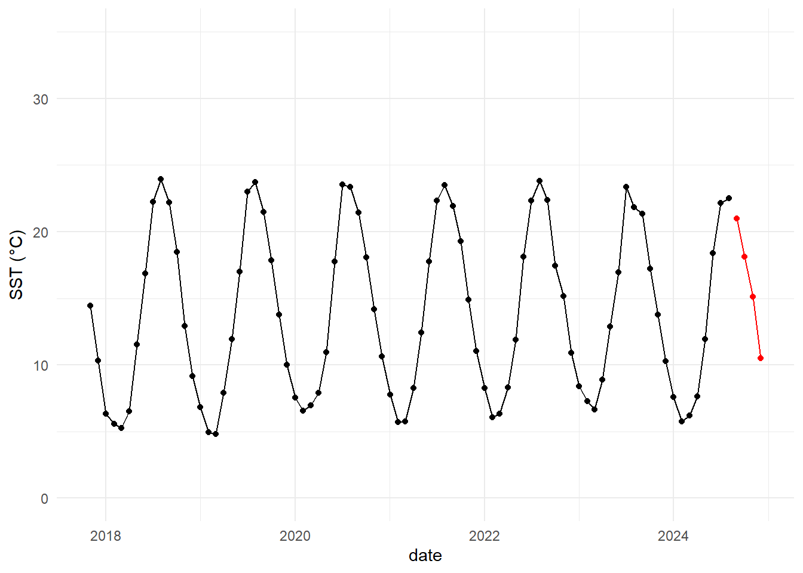
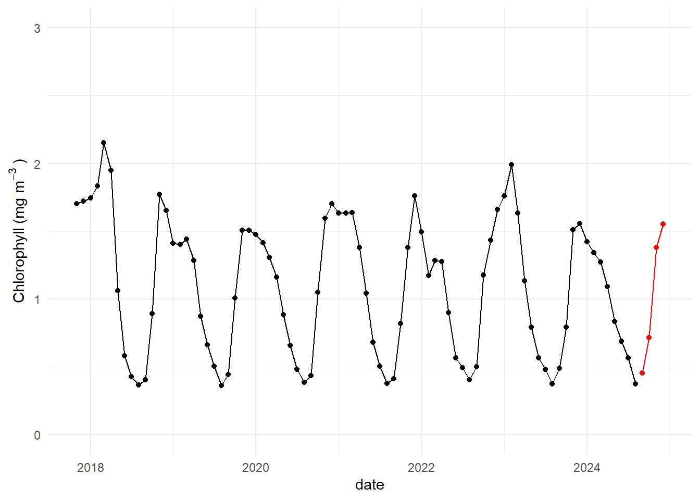
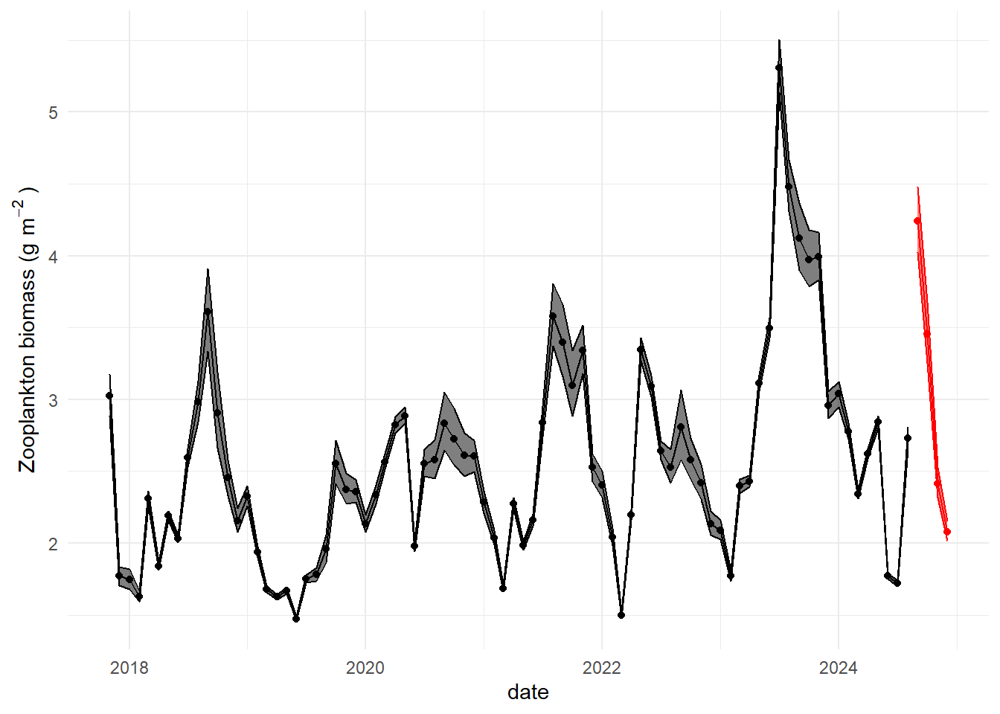
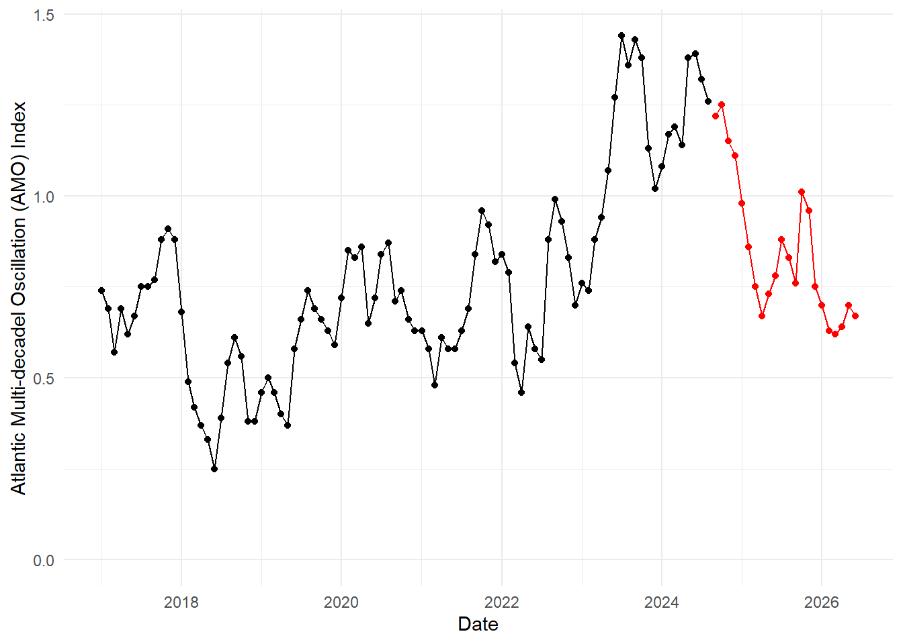
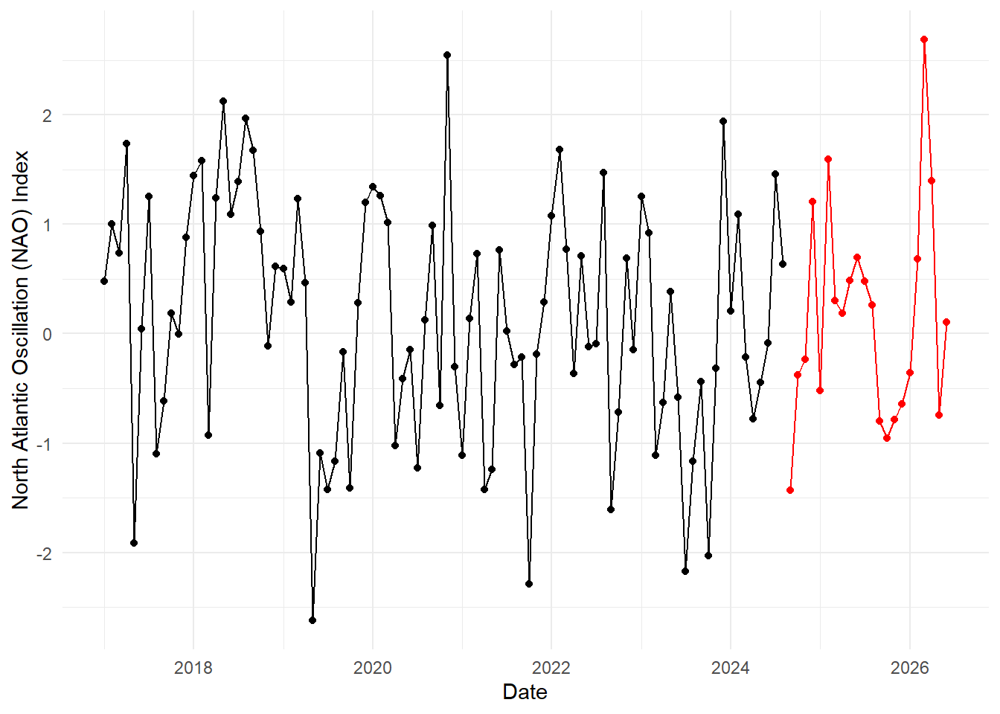
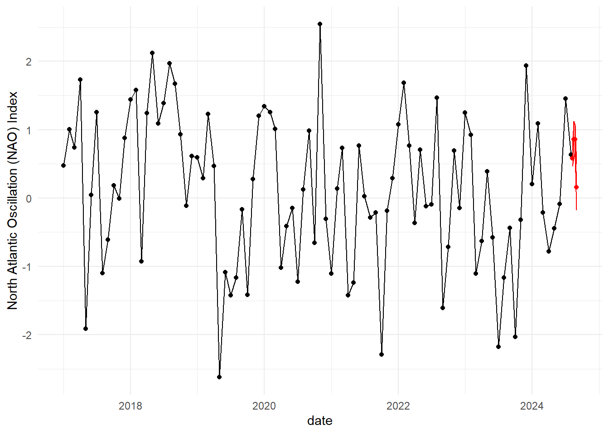

Overview
Overview
This repository houses the analytical pipeline to support the project, Defining foraging hotspots of finfish and sharks in the New York Bight: Linking trophic dynamics with spatiotemporal trends in species distributions.
Purpose
This pipeline is used to summarise data of trawl species data, pull environmental forecasts and backcasts of regional environmental variables, fit species and community models of the biological community, and forecast species biomasses/abundance to predict future sampling. The general structure of the pipeline is shown below.
Repository structure
The repository is structured to keep the workflow organized. To do so, it uses the ‘here’ package to navigate the file structure across users. The package can be installed from CRAN using install.pacakges('here').
The main repository structure contains the folders:
- code: This contains all the scripts to load and clean the biological and environmental data.
Within this folder the init.R script contains the important standardized, study-level variables that should be used for initial project setup and data downloads. This script loads all required packages, internal functions and options, and repository checks to correctly setup the repository across users.
data: This folder holds derived data output from functions. The raw trawl data is stored on a local Access database named,
Nearshore Survey.accdb. This file must be placed in a local folder in the project root directory called,ignore. Theignorefolder should be added to the.gitignorefile to avoid corrupting the database during Git procedures. Theinit.Rfile contains a procedure to check that the file structure is correct.docs: This folder houses project documents and output reports to summarise models and forecasts
ignore: This is a hidden local folder that houses the Access database. This should be included in the local project
.gitignoreso must be created by each user. See above for initiation checks in theinit.Rscript.
Database access
Once the database is correctly stored locally, access to the database is managed by the RODBC package. This can be downloaded from CRAN using install.packages("RODBC").
The connection to the database is set using
conn <- odbcConnectAccess2007(here("ignore/Nearshore Survey.accdb"))and all the available database tables with
sqlTables(conn)#> TABLE_NAME TABLE_TYPE
#> 1 CODE_SPECIES SYNONYM
#> 2 MSysAccessStorage SYSTEM TABLE
#> 3 MSysAccessXML SYSTEM TABLE
#> 4 MSysACEs SYSTEM TABLE
#> 5 MSysComplexColumns SYSTEM TABLEEnvironmental variables from the Copernicus Marine Service
Hindcasts and forecasts of environmental variables such as Sea Surface Temperature (SST) and chlorophyll-a (chla) are sourced from Copernicus Marine Service. Updated products are accessed through the Copernicus API. To do so, you must register a free Copernicus account.
Accessing the Copernicus API is operated with the copernicusR package. To install the package:
# Install if you don't have remotes
if (!requireNamespace("remotes", quietly = TRUE)) {
install.packages("remotes")
}
# Install copernicusR
remotes::install_github("HansTtito/copernicusR")
# Load the package
library(copernicusR)
setup_copernicus()Follow the instructions on the copernicusR page to set up the credentials of your Copernicus account. It is recommended to follow the “Alternative Setup: Method 3” instructions to securely set environmental variables for your account username and password.
Initial download
The Copernicus systems provide a number of different environmental data products that vary in the spatial and temporal extents. Initial data downloads of hindcast data were completed for the study area in the following coordinates:
NYSbbox = c(-74.262999, -71.389711, 39.803091, 41.431287)bathPath = here("data/environmental/gebco_2026_n41.4_s39.8_w-74.3_e-71.4.nc")
# turn this into a raster object
bathRast = terra::rast(bathPath)
bathDf = as.data.frame(bathRast, xy = TRUE)
bathVars = names(bathDf)[3]
threshold = 0
ggplot()+
geom_raster(data = bathDf,aes(x = x, y = y, fill = ifelse(.data[[bathVars]] > threshold, NA, .data[[bathVars]])), alpha = 1)+
annotation_borders('world',
xlim = c(NYSbbox[1],NYSbbox[2]),
ylim = c(NYSbbox[3], NYSbbox[4]),
fill = 'grey')+
annotate(geom = 'rect', xmin = NYSbbox[1], xmax = NYSbbox[2],
ymin = NYSbbox[3], ymax = NYSbbox[4], fill = NA, color = 'black')+
coord_sf(crs = 4326,
xlim = c(NYSbbox[1],NYSbbox[2]),
ylim = c(NYSbbox[3], NYSbbox[4]))+
labs(title = "NYS study region", x = 'Longitude', y = 'Latitude')+
theme(legend.position = 'none')
This should be used for all data downloads of regional environmental data.
Sea surface temperature data is provided in two different products, one prior to 2022-06-01 (Global Ocean Physics Reanalysis: GLOBAL_MULTIYEAR_PHY_001_030), and the current forecast out 1-week from current (Global Ocean Physics Analysis and Forecast: GLOBAL_ANALYSISFORECAST_PHY_001_024). These were initially combined by downloading and summarising the data for the study area:
# download the re-analysis data product for before 2022-06-01
# this is monthly mean sst
sstHindPath = copernicus_download(
dataset_id = "cmems_mod_glo_phy_my_0.083deg_P1M-m",
dataset_version = "202311",
variables = "thetao",
start_date = bioHindStart,
end_date = bioStart,
bbox = NYSbbox,
depth = c(0.49402499198913574,1), # 0.5m to 1m depth
output_file = here("data/environmental/sstHind.nc")
)
# turn this into a raster object
sstHindRast = terra::rast(sstHindPath)
# set the starting date for each observation
sstHindDate = as.Date(as.POSIXct(sstHindRast@ptr[["time"]], format = "%Y-%m-%d %H:%M:%S"), format = "%Y-%m")
# extract the area mean temperature. na.rm must be TRUE because land area in the study box
sstHindMean = terra::global(sstHindRast, 'mean', na.rm = TRUE)
sstHindDf = data.frame(date = sstHindDate,
sst = unlist(sstHindMean))
# download the data product for
sstPath = copernicus_download(
dataset_id = "cmems_mod_glo_phy-thetao_anfc_0.083deg_P1M-m",
dataset_version = "202406",
variables = 'thetao',
start_date = bioStart,
end_date = bioEnd,
bbox = NYSbbox,
depth = c(0.49402499198913574,1),# 0.5m to 1m depth
output_file = here("data/environmental/sstFore1.nc")
)
# set this as a raster object
sstRast = terra::rast(sstPath)
# set the starting date for each observation
sstDate = as.Date(as.POSIXct(sstRast@ptr[["time"]], format = "%Y-%m-%d %H:%M:%S"), format = "%Y-%m")
# extract the area mean temperature. na.rm must be TRUE because land area in the study box
sstMean = terra::global(sstRast, 'mean', na.rm = TRUE)
sstDf = data.frame(date = sstDate,
sst = unlist(sstMean))
sstDf = bind_rows(sstHindDf, sstDf) %>%
data.frame %>%
dplyr::summarise(sst = mean(sst), .by = 'date')
saveRDS(sstDf, here('data/environmental/sst.rds'))This data currently covers 1-month past the final trawl data of 2024-08-14 (i.e., 2024-09-14). For the purposes of this initial exercise, we would treat this next month for forecasting purposes.
sst = readRDS(here('data/environmental/sst.rds')) %>%
dplyr::mutate(future = ifelse(as.Date(date) <= as.Date("2024-08-14"), FALSE, TRUE))
sst %>%
ggplot()+
geom_point(aes(x = date, y = sst, color = future))+
geom_line(aes(x = date, y = sst, color = future))+
scale_color_manual(values = c('black','red'))+
scale_y_continuous(name = expression(paste("SST (","\u00B0","C)")),
limits = c(0,35))+
theme(legend.position = "none")
Chlorophyll-a
# download the re-analysis data product for before 2022-06-01
if(any(rerun_forecasts, !file.exists(here('ignore/environmental/chla.nc')))){
chlHindPath = copernicus_download(
dataset_id = "cmems_mod_glo_bgc_my_0.25deg_P1M-m",
dataset_version = "202406",
variables = "chl",
start_date = bioHindStart,
end_date = bioEnd,
bbox = NYSbbox,
depth = c(0.5057600140571594,1.5558550357818604), # 0.5m to 1m depth
output_file = here("ignore/environmental/chla.nc")
)
if(rerun_forecasts){
file.remove(here("ignore/environmental/chla.nc"))
}
file.copy(chlHindPath, here('ignore/environmental/chla.nc'))
} else{
chlHindPath = here('ignore/environmental/chla.nc')
}
# turn this into a raster object
chlRast = terra::rast(chlHindPath)
# set the starting date for each observation
chlDate = as.Date(as.POSIXct(chlRast@ptr[["time"]], format = "%Y-%m-%d %H:%M:%S"), format = "%Y-%m")
# extract the area mean temperature. na.rm must be TRUE because land area in the study box
chlMean = terra::global(chlRast, 'mean', na.rm = TRUE)
chlSD = terra::global(chlRast, 'sd', na.rm = TRUE)
chlDf = data.frame(date = chlDate,
chl = unlist(chlMean))
saveRDS(chlDf, here('data/environmental/chl.rds'))The chlorophyll a data currently covers 1-month past the final trawl data of 2024-08-14 (i.e., 2024-09-14). For the purposes of this initial exercise, we would treat this next month for forecasting purposes.
chl = readRDS(here('data/environmental/chl.rds')) %>%
dplyr::mutate(future = ifelse(as.Date(date) <= as.Date("2024-08-14"), FALSE, TRUE))
chl %>%
ggplot()+
geom_point(aes(x = date, y = chl, color = future))+
geom_line(aes(x = date, y = chl, color = future))+
scale_color_manual(values = c('black','red'))+
scale_y_continuous(name = expression("Chlorophyll (mg"~m^-3~")"),
limits = c(0,3))+
theme(legend.position = "none")
Low and Mid-trophic level data
Copernicus also provides reanalysis of low and mid-trophic level biomass here. These are measures of zooplankton biomass for the study area.
if(any(rerun_forecasts, !file.exists(here('ignore/environmental/lmtl.nc')))){
lmtlHindCast = copernicus_download(
dataset_id = "cmems_mod_glo_bgc_my_0.083deg-lmtl_P1D-i",
dataset_version = "202511",
variables = c("zooc"),
start_date = bioHindStart,
end_date = bioEnd,
bbox = NYSbbox,
depth = c(0.5057600140571594,1.5558550357818604), # 0.5m to 1.5m depth
output_file = here("ignore/environmental/lmtl.nc")
)
if(rerun_forecasts){
file.remove(here("ignore/environmental/lmtl.nc"))
}
file.copy(lmtlHindCast, here('ignore/environmental/lmtl.nc'))
} else{
lmtlHindCast = here('ignore/environmental/lmtl.nc')
}
# open the nc file to extract specific variables
lmtl_nc_data = nc_open(lmtlHindCast)
lmtlDate= as.Date(as.POSIXct(lmtl_nc_data$dim$time$vals, format = "%Y-%m-%d %H:%M:%S"), format = "%Y-%m_%d")
#
zoocNC = ncvar_get(lmtl_nc_data, varid = 'zooc')
# turn this into a raster object
zoocRast = terra::rast(zoocNC)
# extract the mean and standard deviation of the region
zoocMean = terra::global(zoocRast, 'mean', na.rm = TRUE) %>% unlist %>% as.numeric
zoocSD = terra::global(zoocRast, 'sd', na.rm = TRUE) %>% unlist %>% as.numeric
## simulate daily values from lognormal distribution for error propagation
zoocDf_temp = data.frame(date = lmtlDate,
zooc_mean = zoocMean,
zooc_sd= zoocSD) %>%
# convert the observed mean and sd to a lognormal dist
dplyr::mutate(zooc_mean_ln = log(zooc_mean) - 0.5*zooc_sd,
zooc_sd_ln = log(1+(zooc_sd/(zooc_mean^2))),
date = as.Date(paste0(year(date),"-",month(date),"-01"), format = "%Y-%m-%d"))
zoocDf = monthly_aggregate_ln(mu = zoocDf_temp$zooc_mean_ln,
sd = zoocDf_temp$zooc_sd_ln,
month_var = zoocDf_temp$date) %>%
dplyr::mutate(date = unique(zoocDf_temp$date)) %>%
dplyr::select(date, zooc = 'mean', zooc_l = ci_l, zooc_u = ci_u) %>%
dplyr::mutate(across(contains('zooc'), exp))
saveRDS(zoocDf, here('data/environmental/zooc.rds'))
rm(list = c('zoocDf_temp'))
## The lower and mid-trophic level data currently covers 1-month past the final trawl data of 2024-08-14 (i.e., 2024-09-14). For the purposes of this initial exercise, we would treat this next month for forecasting purposes.
zooc = readRDS(here('data/environmental/zooc.rds')) %>%
dplyr::mutate(future = ifelse(as.Date(date) <= as.Date("2024-08-14"), FALSE, TRUE))
zooc %>%
ggplot()+
geom_point(aes(x = date, y = zooc, color = future))+
geom_path(aes(x = date, y = zooc, color = future))+
geom_ribbon(aes(x = date, ymin = zooc_l, ymax = zooc_u, color = future, fill = future), alpha = 0.5)+
scale_color_manual(values = c('black','red'))+
scale_fill_manual(values = c('black','red'))+
scale_y_continuous(name = expression("Zooplankton biomass (g "*m^-2~")"),
limits = c(NA,NA))+
theme(legend.position = "none")
AMO
The Atlantic multidecadal oscillation SST monthly index can be downloaded from NOAA/NCEI. This product is a high level variable and doesn’t necessarily operate at a temporal scale that makes sense for short-term forecasting. Here were have the index for the monthly AMO sea surface temperature anomaly.
amo_url = "https://www.ncei.noaa.gov/pub/data/cmb/ersst/v5/index/ersst.v5.amo.dat"
amo = read.table(amo_url, skip = 1, header = TRUE) %>%
rename_with(tolower, everything()) %>%
dplyr::filter(year >= lubridate::year(as.POSIXct(bioHindStart))) %>%
mutate(date = as.Date(paste0(year,"-",month,"-01"), format = "%Y-%m-%d"))
saveRDS(amo, here('data/environmental/amo.rds'))readRDS(here('data/environmental/amo.rds')) %>%
dplyr::mutate(future = ifelse(as.Date(date) <= as.Date("2024-08-14"), FALSE, TRUE)) %>%
ggplot()+
geom_point(aes(x = date, y = ssta, color = future))+
geom_line(aes(x = date, y = ssta, color = future))+
scale_y_continuous(name = 'Atlantic Multi-decadel Oscillation (AMO) Index', limits = c(0,NA))+
scale_color_manual(values = c('black','red'))+
scale_x_date(name ='Date')+
theme(legend.position = "none")
NAO
The North Atlantic Oscillation index is an index of broader weather patterns and is estimate from the pressure height contrasts from the North-South regions compared to the long-term climatological data. The monthly values can be accessed via NCEP.
nao_url = "https://www.cpc.ncep.noaa.gov/products/precip/CWlink/pna/norm.nao.monthly.b5001.current.ascii"
nao = read.table(nao_url) %>%
setNames(nm = c('year','month','nao')) %>%
rename_with(tolower, everything()) %>%
dplyr::filter(year >= lubridate::year(as.POSIXct(bioHindStart))) %>%
mutate(date = as.Date(paste0(year,"-",month,"-01"), format = "%Y-%m-%d"))
saveRDS(nao, here('data/environmental/nao.rds'))
However, We can also estimate the NAO using NOAA GFS products. Specifically, we can estimate the NAO index based on the north-south pressure-height contrast in the north Atlantic and correcting this to the the 1981-2010 climatology average for each day, as:
\[NAO = \frac{(Z500_{35N-45N, 70W-10W} - Z500_{55N-70N,70W-10W}) - climatology_{mean}}{climatology_{SD}}\]
This allows us to use the forecast, and their variability, in forecasting.

Spatial data within study area
We can also explore the spatial and temporal variability in some of these variables.